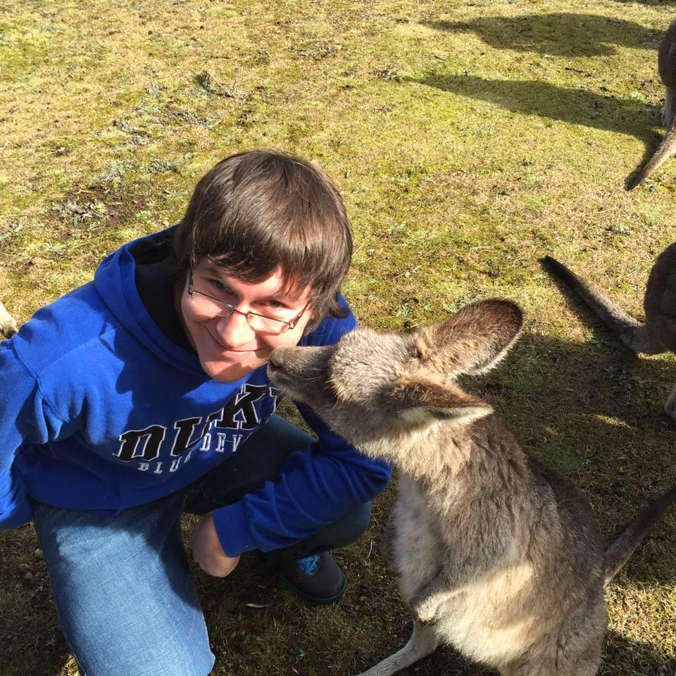

About Me
Hey everybody, my name is Noah Over and I am a Computer Science student currently at Duke University. I love coding and enjoy that feeling when you get when all the work you put into a project finally pays off and you got it working. Because of this, I love going through code and fixing bugs. While it might be frustrating at first, it is just so satisfying when you finally figure out what the problem is and get to work on it. I am currently in the process of looking for an internship this summer, hopefully in front end web design and development, which is something I have recently come to love. I am in the process of learning as much as I can about HTML, CSS, and Javascript in order to make the best website possible.
Like I said, I really enjoy web design and development and am constantly working to improve my skills in that field, but that is not my only skills when it comes to coding. I also have worked with Java and Python extensively and have experience with C as well. I have experience with both object-oriented programming and agile software development. Back to web development, I have used Bootstrap, jQuery, and LESS all in the past and would be prepared to use them at a job opportunity.
Finally, I'd like to tell you a little bit more about me on a more personal note. I am from a small town called Woodbury in Pennsylvania where the cows probably outnumber the people. I grew up playing a lot of soccer and I still like to get out and play a pickup game whenever I can. I enjoy community service and have earned my Eagle Scout for the Boy Scouts of America. During my free time, I like to chill with my friends, watch sports like college basketball, the MLB, or the NHL. I am an avid Duke basketball fan and have tented out for basketball games plenty of times and I try to watch Pittsburgh Pirates and Penguins games whenever I can. Finally, I like to read, either thrillers by someone like Lee Child or Jeffrey Deaver or comic books. I am currently enjoying Chris Claremont's run on Uncanny X-Men. I also enjoy traveling, even though I have not been able to do much of it, but you can see me in Australia in the above photograph.